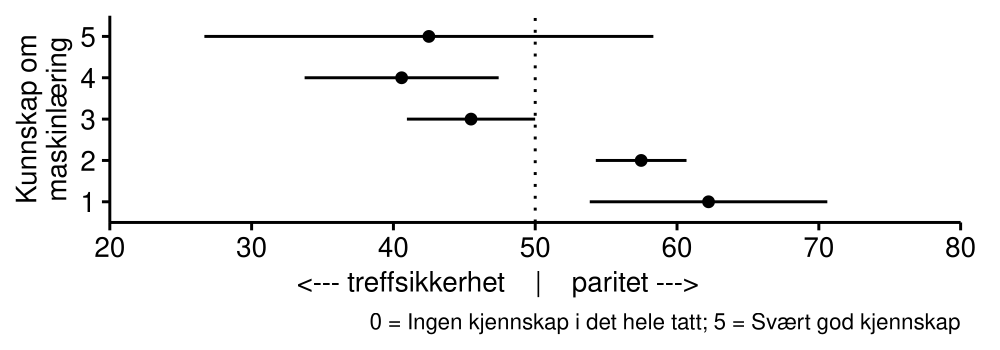
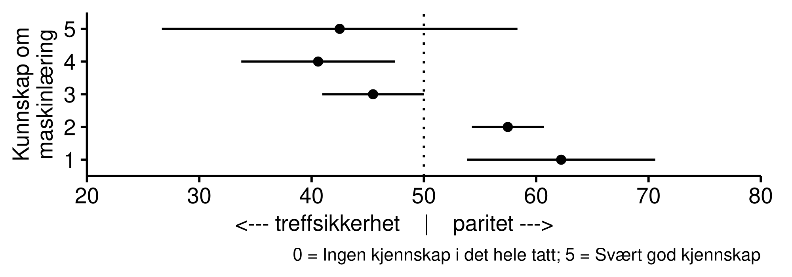

Kapittel 6 Statistisk paritet
Et realistisk eksempel hvor maskinlæring kan brukes i forvaltningen er når NAV skal bestemme hvilke sykmeldte som skal få tilbud om dialogmøte med NAV. Et dialogmøte er en samtale mellom NAV og den sykmeldte som anses som positivt for den sykmeldtes muligheter for å komme tilbake i arbeid.
I prinsippet har alle rett på et dialogmøte, men i praksis foregår det en siling hvor det gjøres en vurdering av hvem som har mest nytte av et slikt møte. Bruk av maskinlæring og kunstig intelligens kan i dette tilfellet bidra til bedre estimater for hvem som er i fare for å bli langtidssykemeldt, og derfor kan ha større nytte av et dialogmøte. Derfor er NAV i innledende stadier på å utvikle maskinlæringsmodeller som predikerer sannsynlighet for at en sykemeldt fortsatt vil være sykemeldt 12 uker fram i tid.
Når man bestemmer innretningen på en modell må man foreta prioriteringer. En prinsipielt viktig prioritering handler om man skal ta i bruk såkalt statistisk paritet som rettferdighetsprinsipp på utvalgte egenskaper ved individene det gjelder. Kjønnsparitet er ett eksempel, men det kan også handle om statistisk paritet etter alder, etnisitet, geografi, med mer. Et kjent eksempel innenfor litteraturen om rettferdig bruk av kunstig intelligens er studien som viser hvordan afro-amerikanske fengselsinnsatte sjeldnere blir tilbudt prøveløslatelse enn hva andelen deres skulle tilsi. Dette skjer når avgjørelsen om prøveløslatelse baserer seg på prediksjonsmodeller om risikoen for at den innsatte blir tatt påny for en kriminell handling dersom hen slippes fri (Chouldechova 2017). Å anvende paritetsprinsippet her innebærer å sikre at andelen innsatte som tilbys prøveløslatelse samsvarer med andelen innsatte for hver av de etniske gruppene i fengselet. Fordelen med å bruke statistisk paritet etter etnisitet er at prøveløslatelse blir likt fordelt blant de etniske gruppene, og slik sett kan oppleves som rettferdig fordelt. Utfordringen ved å bruke dette prinsippet er at andre egenskaper ved de innsatte – som for eksempel risikovurderinger om tilbakefall til kriminelle handlinger – blir nedprioritert. Er etnisitet i dette tilfellet så viktig at man bør la det gå på bekostning av risikovurderinger knyttet til tilbakefall?
NAVs tilfelle om dialogmøte er mindre dramatisk enn eksempelet om prøveløslatelse. Samtidig er de prinsipielle problemstillingene de samme. Statistisk paritet innebærer i tilfellet om dialogmøte at modellen sikrer at like mange menn og kvinner skal få tilbud om dialogmøte. Denne prioriteringer vil i så fall gå delvis på bekostning av å prioritere treffsikkerhet med tanke på å invitere de som har størst nytte av et slikt møte.
For å studere respondentenes umiddelbare reaksjoner til et slik etisk dilemma knyttet til rettferdig bruk av kunstig intelligens ber vi respondentene se for seg et valg mellom to alternative maskinlæringsmodeller for å velge hvem som skal få tilbud om dialogmøte.
Ingen av modellene er perfekte, men de feiler på ulike måter.
Den første modellen er mest treffsikker. Det vil si at det totalt sett er flere sykemeldte med behov for dialogmøte som får tilbudet enn tilfellet er for den andre modellen. Samtidig har modellen en bias til fordel for menn, som gjør at det er flere kvinner med behov for dialogmøte som ikke får tilbudet. Andelen som har behov for dialogmøte uten å få tilbud er altså større hos kvinner enn menn.
Den andre modellen sikrer statistisk paritet etter kjønn, nemlig at andelen av de sykmeldte som kalles inn til dialogmøte er like stor henholdsvis for kvinner som for menn. Imidlertid er den mindre treffsikker totalt sett, slik at færre som har behov for dialogmøte blir innkalt. Dette gjelder både kvinner og menn.
Hvis det står mellom disse to modellene, hvilken modell synes respondentene virker mest rettferdig? Figuren under viser at et knapt flertall foretrekker en modell som vektlegger statistisk paritet. Det vil si at de ønsker å bruke en modell som sikrer likebehandling av kjønn, selv på bekostning av lavere treffsikkerhet totalt sett.

I teksten over står det at den mest treffsikre modellen favoriserte menn. For å undersøke om det har noen innvirkning på svarene hvilket kjønn modellen favoriserer veksler vi på denne beskrivelsen. Halvparen av respondentene får vite at modellen har en bias til fordel for menn, mens den andre halvparten av respondentene får vite at modellen favoriserer kvinner. Spiller det noen rolle hvilket kjønn modellen favoriserer? Resultatene viser at det gjør det.
I figuren under ser vi at det er i de tilfeller hvor menn blir fordelaktig behandlet ved bruk av den mest treffsikre modellen at flertallet ønsker å bruke en modell som sikrer likebehandling av kjønn. Det er en signifikant større andel av respondentene som foretrekker paritetsprinsippet når menn har fordel av den treffsikre modellen enn når kvinner har det.
Hva dette skyldes vet vi ikke. Man ser liknende kjønnseffekter i eksperimenter om politisk representasjon, hvor kvinnelige kandidater jevnt over foretrekkes i noe høyere grad enn mannlige kandidater gjør (Schwarz & Coppock 2020). I den litteraturen pekes det på forklaringer om at folk er motivert ut fra et ønske om å kompensere for historisk underrepresentasjon av kvinner i politiske stillinger. Hvorvidt det ligger liknende strukturelle motivasjoner for våre resultater, psykologiske faktorer, eller andre forhold er et interessant forskningsspørsmål som vi ikke har data til å besvare, og som derfor bør studeres videre.

Det vi imidlertid ser, og til forskjell fra litteraturen om politisk representasjon, er at kvinner responderer noe mer på informasjon om hvilket kjønn som kommer best ut av en modell som prioriterer treffsikkerhet. Både menn og kvinner foretrekker paritetsmodellen oftere i de tilfellene kvinnene kommer dårlig ut av treffsikkerhetsmodellen enn i de tilfellene hvor menn kommer dårlig ut av samme modell, men denne effekten er noe sterkere hos kvinner enn menn.
Det er også en generell forskjell blant respondentene i den forstand at kvinner i sterkere grad foretrekker paritetsmodellen enn menn gjør, uavhengig av om det er menn eller kvinner som kommer best ut av det.
 Vi observerer også en modererende effekt av kunnskap om maskinlæring:
Jevnt over ser vi at jo høyere kunnskap om maskinlæring, desto høyere andel modellen som prioriterer treffsikkerhet framfor statistisk paritet.
Det her er igjen verdt å nevne at slike bivariate, statistiske sammehenger ikke sier noe om årsakssammenhenger.
SKAL VI TA MED DENNE FIGUREN? DEN PASSER IKKE SUPERGODT INN I NARRATIVET, OG ER VANSKELIG Å DISKUTERE.

Vi observerer også en modererende effekt av kunnskap om maskinlæring:
Jevnt over ser vi at jo høyere kunnskap om maskinlæring, desto høyere andel modellen som prioriterer treffsikkerhet framfor statistisk paritet.
Det her er igjen verdt å nevne at slike bivariate, statistiske sammehenger ikke sier noe om årsakssammenhenger.
SKAL VI TA MED DENNE FIGUREN? DEN PASSER IKKE SUPERGODT INN I NARRATIVET, OG ER VANSKELIG Å DISKUTERE.
